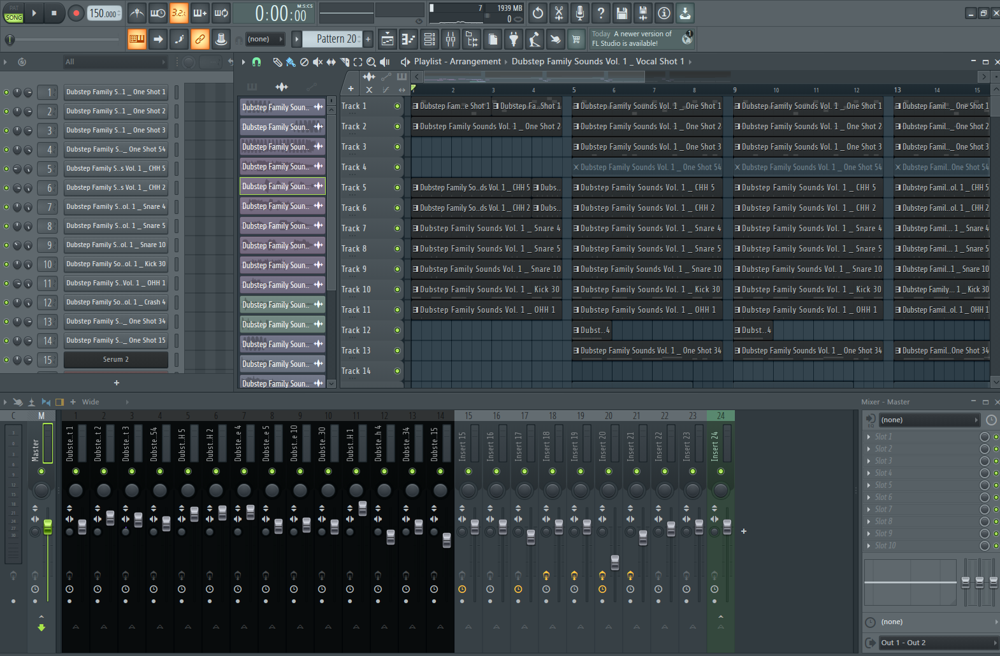
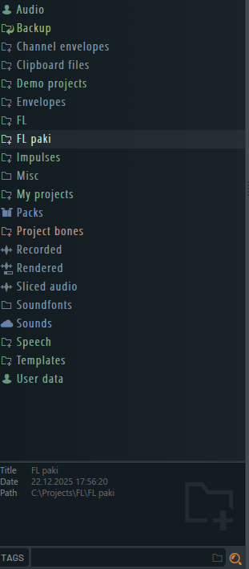
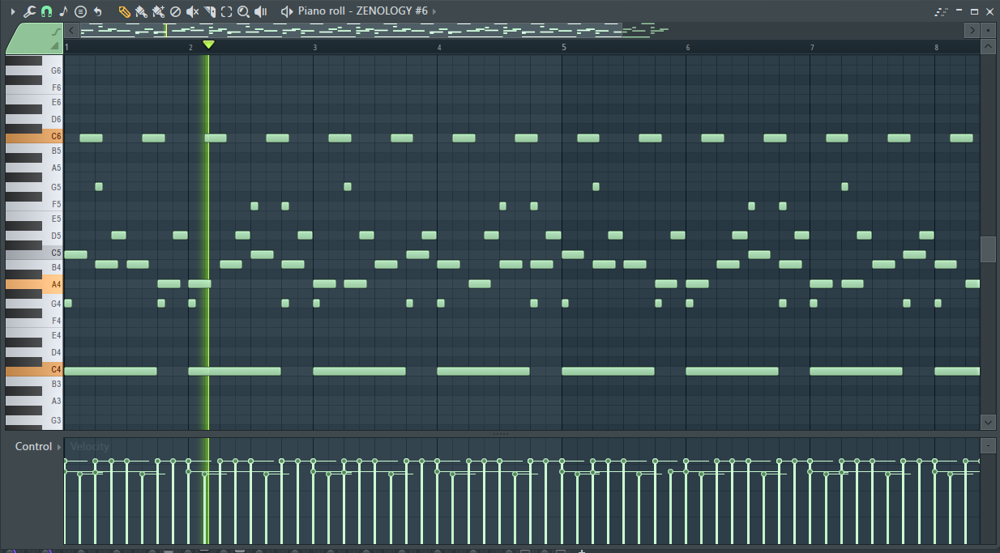
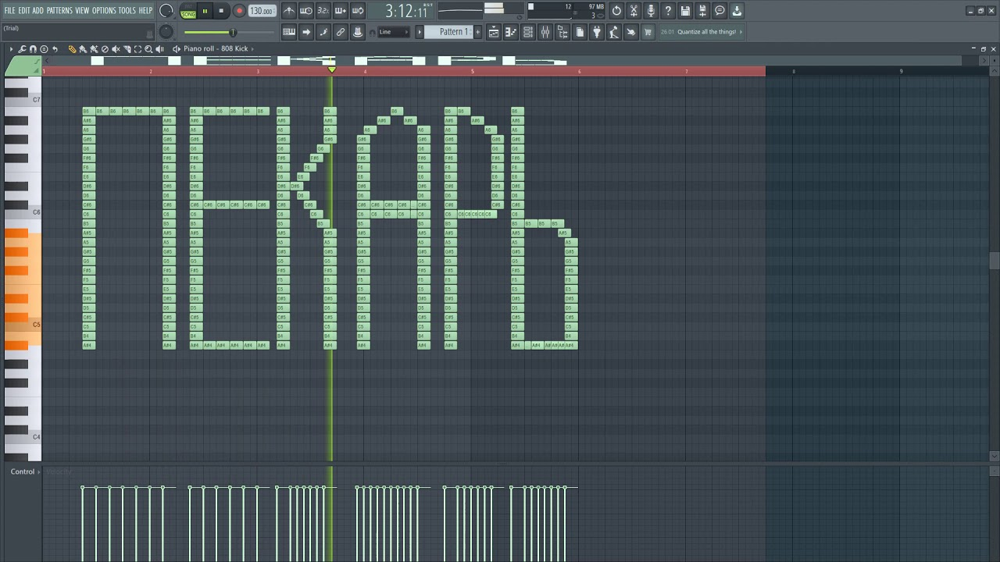

Что такое FL Studio?
Скриншоты
Пример работы
Музыка автора
Связь с автором
FL Studio
Что такое этот ваш FL Studio?...
FL Studio — цифровая звуковая рабочая станция (DAW) и секвенсор для написания музыки. Музыка создаётся путём записи и сведения аудио- или MIDI-материала.
Интерфейс
"авиасистемы"




Пример профисиональной работы в FL Studio
Пример работ автора сайта
Связь с автором
Запрет-gram
Telegram
SnapChat
Instagram
Пупу-gram